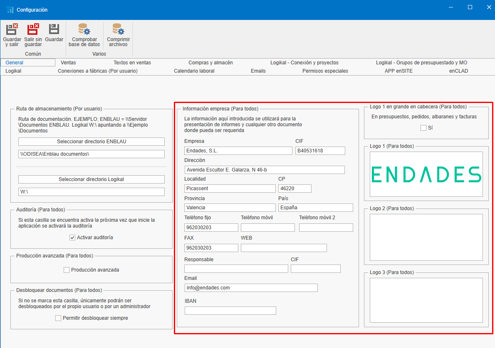
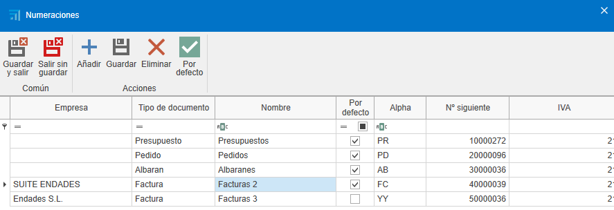
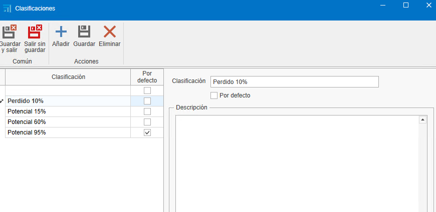
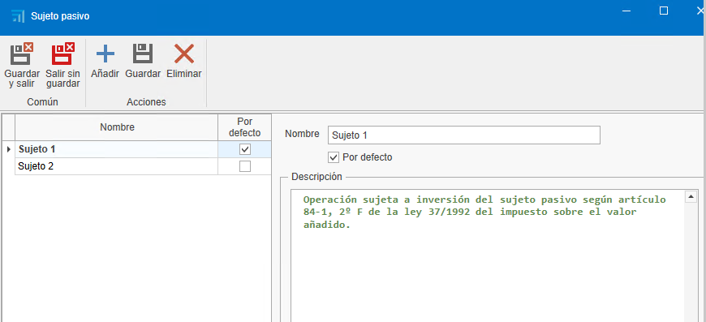
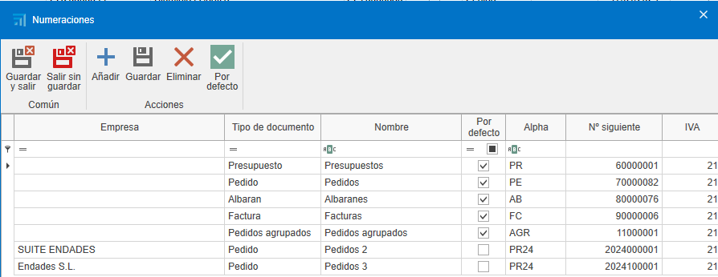
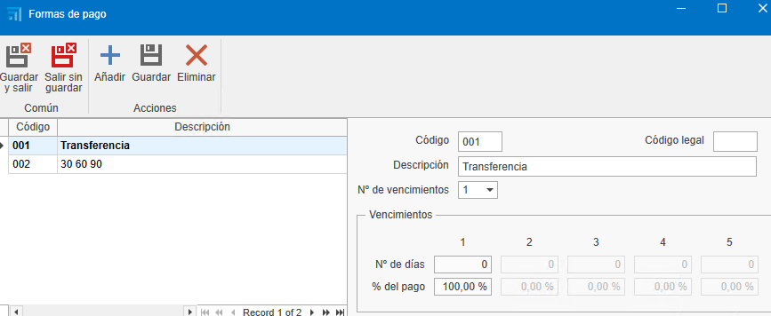

1. Configuración Inicial de ENBLAU
1. Propósito
El presente manual está diseñado para guiar a los nuevos usuarios en la configuración inicial de ENBLAU. Esta configuración incluye todo lo necesario para que el cliente pueda realizar ventas, compras y la emisión de facturas.
2. Configuración General

2.1. Configuración de Conexión con Logikal
-
Para conectar con la fábrica y los proyectos de Logikal, es necesario indicar la ruta de instalación y la DLL de Logikal (unidad de red donde apunta Logikal).
-
Desde General, ir a Logikal - Conexión y Proyectos.

2.2. General
- Ruta de almacenamiento: Indicar la ruta donde se guardarán los documentos de ENBLAU y Logikal (unidad de red). Ejemplo:

Nota: Es recomendable utilizar una unidad de red. Si no existe, créala.
- Información de la empresa: Rellenar los campos necesarios con la información de la empresa, como nombre, CIF, dirección, logos, etc.

2.3. Textos en Ventas
- Añadir textos para documentos de ventas, como observaciones, condiciones, etc.

3. Gestión de Usuarios
- Para dar de alta a nuevos usuarios, accede a Usuarios.

- En Nuevo, puedes crear nuevos usuarios.

- Se abrirá una ventana para configurar la información del usuario (nombre, dirección, email, teléfono, etc.), el tipo de usuario (Técnico, Comercial, Taller, etc. Se puede asignar más de un tipo) y los permisos. Los permisos solo pueden ser asignados por usuarios de tipo administrador.

- Una vez dado de alta, el usuario podrá ser editado en cualquier momento.
4. Configuración de Cuentas de Email
- Para configurar las cuentas de correo de cada usuario, accede a Cuentas de Email.


5. Gestión de Empresas
- En caso de tener varias empresas, puedes crearlas en el apartado de Empresas, en Añadir. Luego, rellena la información en General y Textos en Ventas según sea necesario para cada empresa.


Importante: Si no se indica otra empresa, los proyectos tomarán por defecto la empresa añadida previamente en la configuración básica de General.
6. Configuración de Proyectos
- Desde el apartado de Ventas selecionar Proyectos, accede a Configuración.

- Desde la configuración, accederás a un desplegable con un listado para configurar. Para una configuración inicial, es necesario configurar Estados y Directorios por Defecto.
6.1. Estados
- Al seleccionar Estados, se abrirá una ventana para definir los estados de los proyectos (obra).

6.2. Directorios por Defecto
- Al seleccionar Directorios por Defecto, se abrirá una ventana para definir los directorios necesarios en la carpeta de documentación.

7. Configuración de Ventas
- Desde el apartado de Ventas selecionar Documentos de Ventas, accede a Configuración.


- Desde la configuración, accederás a un desplegable con un listado para configurar. Para una configuración inicial, es necesario configurar Numeraciones, Formas de Pago, Bancos, Modos de Pago, Conceptos de Roturas, Clasificaciones, Sujetos Pasivos (IVA) y Directorios por Defecto.

7.1. Numeraciones
- Al seleccionar Numeraciones, se abrirá una ventana para definir los tipos de numeraciones para documentos de ventas, asignando números correlativos a los documentos.

- Ejemplo: Tipo de documento "Presupuesto", prefijo (Alpha) y número (siguiente número) - PR1000272.

7.2. Formas de Pago
- Al seleccionar Formas de Pago, se abrirá una ventana para definir las formas de pago necesarias para generar vencimientos en las facturas.

- Ejemplo: Indicar en cuántas veces y el porcentaje que el cliente debe pagar en cada vencimiento.

7.3. Bancos
- Al seleccionar Bancos, se abrirá una ventana para indicar la información del banco. El nombre y un codigo.

7.4. Modos de Pago
- Al seleccionar Modos de Pago, se abrirá una ventana para definir los distintos modos en los que se puede realizar el cobro de un vencimiento.

7.5. Conceptos de Roturas
- Al seleccionar Conceptos de Roturas, se abrirá una ventana para definir los conceptos de rotura según sea necesario.

7.6. Clasificaciones
- Al seleccionar Clasificaciones, se abrirá una ventana para definir las clasificaciones de presupuestos.

7.7. Sujetos Pasivos (IVA)
- Al seleccionar Sujetos Pasivos (IVA), se abrirá una ventana para definir los tipos de sujetos pasivos.

7.8. Directorios por Defecto
- Al seleccionar Directorios por Defecto, se abrirá una ventana para definir los directorios necesarios en la carpeta de documentación.

8. Configuración de Compras
- Desde el apartado de Comparas selecionar Documentos de Compras, accede a Configuración.


- Desde la configuración, accederás a un desplegable con un listado para configurar. Para una configuración inicial, es necesario configurar Numeraciones, Formas de Pago, Clasificaciones y Directorios por Defecto.

8.1. Numeraciones
- Al seleccionar Numeraciones, se abrirá una ventana para definir los tipos de numeraciones para documentos de compra, asignando números correlativos a los documentos.

- Ejemplo: Tipo de documento "Pedido", prefijo (Alpha) y número (siguiente número) - PE70000082.
8.2. Formas de Pago
- Al seleccionar Formas de Pago, se abrirá una ventana para definir las formas de pago necesarias para generar vencimientos en las facturas.

- Ejemplo: Indicar en cuántas veces y el porcentaje que se debe pagar en cada vencimiento.
8.3. Clasificaciones
- Al seleccionar Clasificaciones, se abrirá una ventana para definir las clasificaciones de compras.

8.4. Directorios por Defecto
- Al seleccionar Directorios por Defecto, se abrirá una ventana para definir los directorios necesarios en la carpeta de documentación.

9. Conclusión
Siguiendo este manual, podrás hacer una configuracion inicial de ENBLAU para el uso de creación de documentos de compras y ventas.